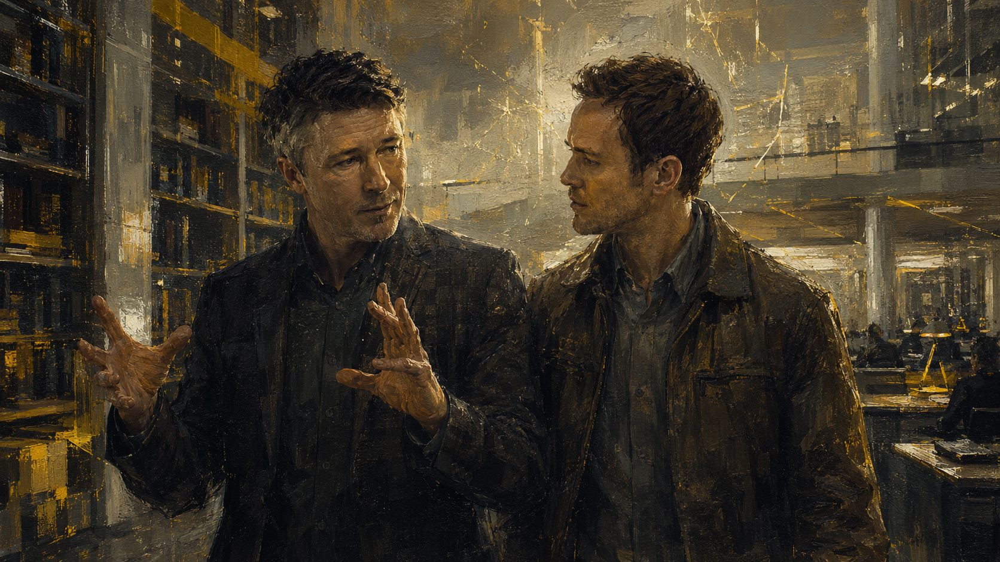

A native comic-spread reader for replaying a 20-30 minute gameplay chunk: big scene panels, short text boxes, and review evidence placed like a magazine page instead of a vertical article.
This is not an official canon claim. It is the single route chosen for this Steam Completions review run, so the final verdict rates one coherent completed path.
Route verdict
PR -> Personal -> Amaral -> Control
Chosen because it keeps narrative control, personal tragedy, science logic, and Paul's antagonist arc coherent.
Junction 1PRMonarch controls the narrative, not only the guns.
Junction 2PersonalPaul and Jack stay emotionally central.
Junction 4ControlPaul remains a coherent tragic antagonist.
Image format - Panel Contract
16:9 First
Use 16:9 landscape panels for the current journal template. Each page wants one lead image plus three support beats, so it reads as a comic spread before it reads as a spreadsheet.
Default asset
16:9 landscape panels
Story beats, environment reveals, action setup, UI moments, and evidence screenshots.
Recommended now
Page rhythm
1 lead + 3 support beats
One establishing image, then three smaller beats for cause, detail, and review impact.
Comic-page flow
Reserve format
3:4 later
Only for deliberate close-ups, dossiers, or a special emotion beat.
Optional later
Asset handoff
Exact filename slots
The public manifest drives the image slots; the build replaces any matching file into its named panel.
The first proper journal page: Riverport University, Paul Serene, Project Promenade, and the last quiet walk before the time machine.
Image-ready comic page
Project Promenade
4 image slots16:9 first pass
Panel A / 16:9Riverport University exterior / protest / 4 AM arrival
Establish the place before the time fracture: cold campus, Monarch pressure, early-morning arrival, and the sense that the experiment has already escaped ordinary control.
Read-aloud story beat
The last normal walk
Jack Joyce arrives before dawn, pulled in by Paul Serene, an old friend hiding the scale of what he is about to reveal.
The building is quiet, glossy, and overcontrolled: blue-lit doors, glassy lab surfaces, polished corridors, and sterile confidence.
It feels authored and deliberate: not an open playground, but a guided walk into a machine that has already started bending the story around itself.
Panel B / 16:9Paul leading Jack / lab corridor threshold
Paul frames Project Promenade as a proof moment before the institution closes around it.
Panel C / 16:9Meyer-Joyce field / black-hole primer
The science primer lands as short sci-fi texture: enough to sell the premise, not enough to stop the page.
Panel D / 16:9Will Joyce shadow / family tension seed
Will Joyce is already a ghost-presence. Paul's secrecy creates tension before the machine is activated.
What this proves
Authored momentum
The opening supports the Remedy cinematic-experiment lens: constant dialogue, readable spaces, and controlled sci-fi mood.
Friction note
Exposition density
The setup is heavy, but it helps because the scene is a guided lab tour. Watch whether the game later overexplains.
The experiment stops being a pitch and becomes the first real fracture: two-minute proof, five-minute escalation, unclear detonation, frozen-time rescue, and the first combat power.
Replay note converted to comic page
First Stutter
4 image slots16:9 first pass

The machine proves a two-minute jump, then Paul pushes the test forward again. The scene crosses from guided lecture into irreversible danger.
Read-aloud story beat
Time moves, then stops
The demonstration proves the pitch: Paul sends an object back two minutes, then pushes into a five-minute forward jump. Will warns that time is going to end, but explains too late.
The core detonates while everyone is still inside. It reads like a self-detonating machine core, then the frozen-time state lands: Will is stuck, Jack restarts him by touching him awake, and combat becomes readable.
Panel B / 16:9First anomaly / time fracture proof
The first anomaly needs to read as a story event: two-minute proof, five-minute escalation, and Will's warning before the explanation lands.
Panel C / 16:9Machine core detonation / unclear cause
The explosion is effective but slightly muddy. The note flags uncertainty: it did not read like someone shot the core.
Panel D / 16:9Frozen Will / first combat power
The stutter wake-up and first time-slow combat beat prove the premise can become readable play.
Use 16:9 landscape panels for the current journey template. Three to four images give a page a comic rhythm without bloating the beat; 3:4 portrait slots can come later for deliberate character close-ups.
Shared style contract
One visual language
Keep one coherent cinematic sci-fi comic style across the whole page: dark Riverport campus and lab mood, blue chronon light, amber emergency contrast, readable silhouettes, and clean panels that still work at mobile width.
Will frozen in the stutter, Jack touching him awake, first readable time-stop rescue and combat beat.
qb-page-02-d-frozen-will.pngPrompt pack
Scene prompts stay outside the art
Page 02-B: Two-minute time-travel proof escalating into a five-minute forward jump, readable distortion, Will's urgent warning, strong silhouettes, cinematic spectacle without visual confusion.
Page 02-C: Time machine core overloading and detonating on its own, amber emergency light, blue chronon rupture, people caught mid-reaction, cause intentionally unclear.
Page 02-D: Will frozen in a time stutter while Jack touches him awake, still room, suspended debris, first readable time-stop rescue and combat power beat.
qb-page-02-d-frozen-will.png
01 - GenerateUse the shared prompt base and the exact slot prompt.
02 - ExportSave as 16:9 PNG with the listed filename.
03 - Drop inPlace it under docs/assets/img/quantum-break/.
04 - VerifyRun npm run qa:qb-assets; strict mode when all Page 02 images exist.
Drop-in contract
Manifest controlled
The public manifest lives at assets/img/quantum-break/panel-manifest.json. Keep filenames exact. The build auto-wires any matching image file into its manifest slot.